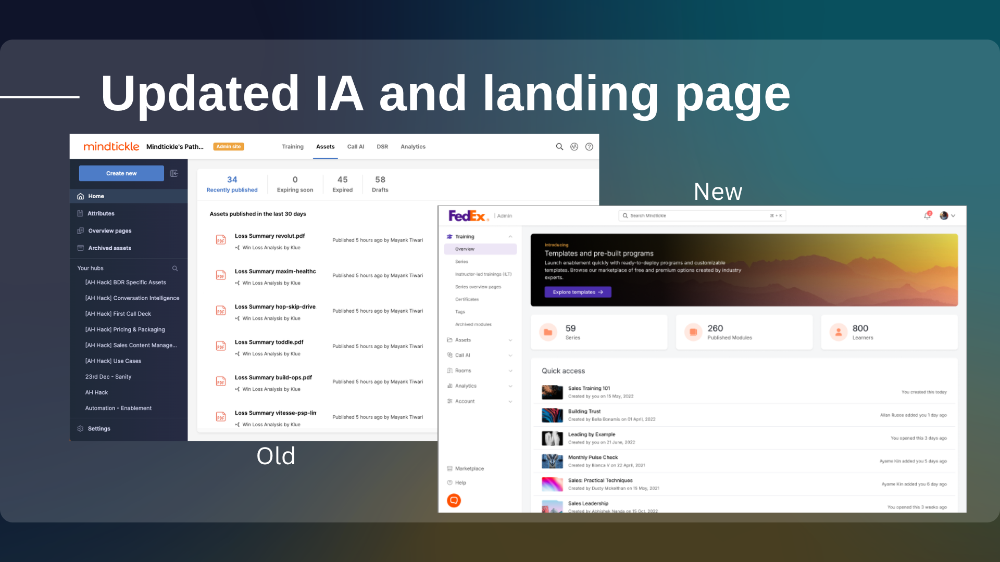
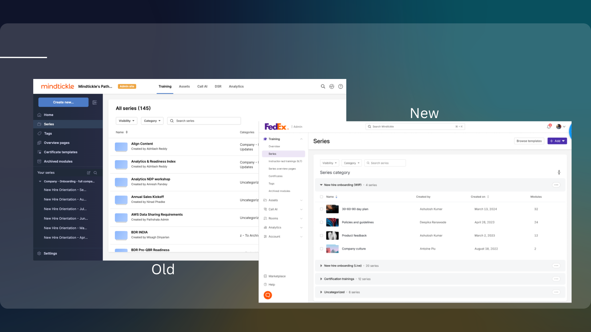

Mindtickle · Platform Redesign
After losing two of its largest clients to a dated, fragmented product, Mindtickle needed more than a visual refresh. It needed a unified language — across 8 product lines, 15 designers and 20 PMs. That's what content design built.
Mindtickle lost two of its largest enterprise clients in 2023. The product had grown fast — 8 product lines, each evolving independently — and the result was a platform that felt like several different applications stitched together. Navigation was inconsistent. Labels were inconsistent. The creation verbs alone had three different answers depending on which product you were in.
The platform refresh was the company's response. But for content design, this wasn't a styling pass. It was a chance to establish a unified voice and information architecture across the entire platform — for the first time.
"Content design wasn't a downstream handoff here. It was embedded from day one."
Cross-functional alignment at this scale doesn't happen by accident. I structured the engagement model explicitly so everyone understood their role in the content decisions.
Phase 1 content design work focused on the information architecture — the bones of the platform. Every navigation decision, every label, every header was reconsidered. Not for aesthetics, but for clarity.

Left: old top navigation with fragmented structure. Right: new collapsible left rail with unified IA, FedEx client view shown.

Left: old flat list with "Create new" and dense navigation. Right: new "Series" label, "+ Add" button, and grouped categories with clear hierarchy.
Before launch, I ran a 41-person research study combining a survey and heatmap testing to validate the new IA. Respondents were asked to match menu icons to tasks, and to click where they'd expect to find key features in the redesigned interface.
Survey + heatmap testing, run before Phase 1 shipped. Results directly shaped the final design decisions.
The testing surfaced real issues before they shipped. Icons without text labels confused users. The separation of Analytics from product-line Insights needed rethinking. Those findings became design decisions — adding labels to all icons, moving Settings back to the left rail and introducing Insights tabs within each product line connected to the overall Analytics page.